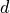

Expressions and Keys¶
Mathematical and Logical Expressions¶
Neper handles mathematical expressions thanks to the muparser library. The expression must contain no space, tabulation or new-line characters, and match the following syntax. [1]
Functions¶
The following table gives an overview of the functions supported by the default implementation. It lists the function names, the number of arguments and a brief description.
| Name | Description |
sin |
sine function |
cos |
cosine function |
tan |
tangens function |
asin |
arcus sine function |
acos |
arcus cosine function |
atan |
arcus tangens function |
sinh |
hyperbolic sine function |
cosh |
hyperbolic cosine |
tanh |
hyperbolic tangens function |
asinh |
hyperbolic arcus sine function |
acosh |
hyperbolic arcus tangens function |
atanh |
hyperbolic arcur tangens function |
log2 |
logarithm to the base 2 |
log10 |
logarithm to the base 10 |
log |
logarithm to the base 10 |
ln |
logarithm to base (2.71828…) |
exp |
e raised to the power of x |
sqrt |
square root of a value |
sign |
sign function: -1 if  ; 1 if ; 1 if |
rint |
round to nearest integer |
abs |
absolute value |
<min> |
min of all arguments |
<max> |
max of all arguments |
sum |
sum of all arguments |
avg |
mean value of all arguments |
Binary Operators¶
The following table lists the default binary operators supported by the parser.
| Operator | Description | Priority |
&& |
logical and | 1 |
|| |
logical or | 2 |
<= |
less or equal | 4 |
>= |
greater or equal | 4 |
= |
not equal | 4 |
== |
equal | 4 |
> |
greater than | 4 |
< |
less than | 4 |
+ |
addition | 5 |
- |
subtraction | 5 |
* |
multiplication | 6 |
/ |
division | 6 |
^ |
raise x to the power of y | 7 |
Ternary Operators¶
The parser has built in support for the if-then-else operator. It uses lazy evaluation in order to make sure only the necessary branch of the expression is evaluated.
| Operator | Description |
?: |
if-then-else operator, following the C/C++ syntax: (test)?value_if_true:value_if_false. |
Statistical Distributions¶
The following table lists the statistical distributions. Custom endpoints (not indicated) can also be added as arguments, as described in the following.
| Operator | Description | Information |
normal(<mean>,<sigma>) |
normal | |
lognormal(<mean>,<sigma>) |
lognormal | |
dirac(<mean>) |
Dirac | |
beta(<x>,<y>) |
beta function | , |
lorentzian(<mean>,<sigma>) |
Lorentzian | |
studentst(<mean>,<sigma>) |
Student’s t | |
weibull(k,<sigma>) |
Weibull | represents the shape |
breitwigner(<mean>,<sigma>[,<gamma>]) |
Breit-Wigner | , default 1 |
expnormal(<mean>,<sigma>[,<gamma>]) |
exp-normal | , default |
moffat(<mean>,<sigma>[,<gamma>]) |
Moffat | , default 1 |
pearson7(<mean>,<sigma>[,<gamma>]) |
Pearson type VII | default |
pseudovoigt(<mean>,<sigma>[,<gamma>]) |
Pseudo-Voigt | , default 0.5 |
skewnormal(<mean>,<sigma>[,<gamma>]) |
skewed normal | default |
custom(<file_name>) |
custom |
mean represents the mean (or centre), and sigma represents the standard deviation (or scale, ). gamma depends on the distribution function (see the above table). For all distributions, custom endpoints can be added as last arguments, as <from_value>,<to_value>, where from_value is the lower endpoint and to_value is the upper endpoint. The parameter keywords do not need to be provided, but, when they are, the parameters can be given in any order, as in moffat(gamma=1,from=0,to=1,sigma=0.1,mean=0.5). Endpoints are considered inclusive by default, but exclusive endpoints can be specified using fromexclusive=<from_value> and toexclusive=<to_value> (frominclusive=<from_value> and toinclusive=<to_value> can be used for inclusive endpoints). String completion is available for the keywords. Finally, a sum of distributions of increasing averages can be provided, as in 0.3*lognormal(0.5,0.1)+0.7*normal(1,0.1).
In the case of the custom distribution, the numerical distribution must be provided in the file. The file must contain the x and y values of the distribution on successive lines. The x values must be provided in ascending order and form a regular grid. The distribution must contain at least 3 points and does not need to integrate to 1.
Tessellation Keys¶
Available keys for a tessellation itself are provided below.
| Key | Descriptor | Apply to |
dim |
dimension | tess |
vernb |
number of vertices | tess |
edgenb |
number of edges | tess |
facenb |
number of faces | tess |
polynb |
number of polyhedra | tess |
cellnb |
number of cells | tess |
x |
x coordinate | tess |
y |
y coordinate | tess |
z |
z coordinate | tess |
coo |
x, y and z coordinates | tess |
area |
surface area | tess |
vol |
volume | tess |
size |
size (surface area/volume in 2D/3D) | tess |
Available keys for tessellation seeds, vertices, edges, faces, polyhedra and cell groups are provided below. Also note that the descriptors apply to cells if they are tagged to apply to polyhedra and the tessellation is 3D and faces and the tessellation is 2D. You may also replace, in the tessellation keys themselves, poly by cell if the tessellation is 3D and face by cell if the tessellation is 2D (it applies only in rare cases). For example, for a 2D tessellation, you may use -statcell ncells instead of -statface nfaces. Keys specific to cells are defined accordingly in the following but also apply to polys is the tessellation is 3D and faces is the tessellations is 2D.
To turn a key value into a value relative to the mean over all entities (e.g. the relative cell size), append the key expression with the :rel modifier. To turn a key value into a value which holds for a unit cell size, append the key expression with the :uc modifier. To use as a reference only the body or true entities (see below), append b or t to the modifiers, respectively.
| Key | Descriptor | Apply to |
id |
identifier | seed, ver, edge, face, poly, group |
x |
x coordinate | seed, ver, edge, face, poly |
y |
y coordinate | seed, ver, edge, face, poly |
z |
z coordinate | seed, ver, edge, face, poly |
coo |
x, y and z coordinates | seed, ver, edge, face, poly |
<xmin> |
minimum x coordinate | edge, face, poly |
<ymin> |
minimum y coordinate | edge, face, poly |
<zmin> |
minimum z coordinate | edge, face, poly |
<xmax> |
maximum x coordinate | edge, face, poly |
<ymax> |
maximum y coordinate | edge, face, poly |
<zmax> |
maximum z coordinate | edge, face, poly |
w |
weight (width for a lamellar tessellation) | seed, cell |
true |
true level | ver, edge, face, poly |
body |
body level | ver, edge, face, poly |
state |
state | ver, edge, face, poly |
domtype |
type of domain (0 if on a domain vertex, 1 if on a domain edge and 2 if on a domain face) | ver, edge, face |
domface |
domain face (-1 if undefined) | face |
domedge |
domain edge (-1 if undefined) | edge |
domver |
domain vertex (-1 if undefined) | ver |
scale |
scale | face [2] |
length |
length | edge |
area |
surface area | face, poly, group |
vol |
volume | poly, group |
size |
size (surface area/volume in 2D/3D) | cell, group |
diameq |
equivalent diameter [3] | face, poly |
radeq |
equivalent radius (half of the eq. diameter | face, poly |
sphericity |
sphericity [4] | poly |
circularity |
circularity [5] | face |
convexity |
convexity [6] | face (only for a 2D tessellation), poly |
dihangleav |
average dihedral angle | face, poly |
dihanglemin |
minimum dihedral angle | face, poly |
dihanglemax |
maximum dihedral angle | face, poly |
dihangles |
dihedral angles | face, poly |
ff |
flatness fault (in degrees) | face |
theta |
disorientation angle (in degrees) | edge (in 2D), face (in 3D) |
cyl |
whether or not is used to describe the circular part of a cylinder domain | edge |
vernb |
number of vertices | edge, face, poly |
vers |
vertices | edge, face, poly |
edgenb |
number of edges | ver, face, poly |
edges |
edges | ver, face, poly |
facenb |
number of faces | ver, edge, poly |
faces |
faces | ver, edge, poly |
polynb |
number of polyhedra | ver, edge, face |
polys |
polyhedra | ver, edge, face |
nfacenb |
number of neighboring faces | face |
nfaces |
neighboring faces | face |
nfacenb_samedomain |
number of neighboring faces of the same domain (parent cell of a multiscale tessellation) | face (in 2D) |
nfaces_samedomain |
neighboring faces of the same domain (parent cell of a multiscale tessellation) | face (in 2D) |
npolynb |
number of neighboring polyhedra | poly |
npolys |
neighboring polyhedra | poly |
npolynb_samedomain |
number of neighboring polyhedra of the same domain (parent cell of a multiscale tessellation) | poly |
npolys_samedomain |
neighboring polyhedra of the same domain (parent cell of a multiscale tessellation) | poly |
vercoos |
vertex coordinates | face, poly |
faceareas |
face surface areas | poly |
faceeqs |
face equations [7] | poly |
nseednb |
number of neighboring seeds | poly |
nseeds |
neighboring seeds [8] | poly |
scaleid(scale_nb) |
identifier of the corresponding cell at scale scale_nb | cell |
lam |
lamella width id [9] | cell |
mode |
mode [10] | cell |
group |
group | cell |
per |
periodic (1 if periodic, 0 otherwise) | ver, edge, face (in 3D) |
Variables consisting of several values (vers, etc.) are not available for sorting
(option -sort).
For a cell, the body and true variables are
defined as follows,
bodyis an integer equal to0if the cell is at the domain boundary, i.e.if it shares at least one face with it (edge in 2D), and is equal to1or higher otherwise. This is determined as follows: if a cell is surrounded by cells withbodyvalues equal to or higher thann, itsbodyvalue is equal ton + 1. Therefore,bodytends to increase with the distance to the domain boundary and can be used to define cells that may suffer from boundary effects.trueis an integer equal to0it the cell shape is biased by the domain boundary, and is equal to1or higher otherwise. A value higher than0is achieved if and only if any seed that would have been located outside the domain (where it could not be) would not have affected the shape of the cell. This condition is fulfilled if the distance between the seed of the cell and any of its vertices is lower than the minimum distance between a vertex of the cell and the domain boundary.trueis extended to values higher than1in the same way as body: if a cell is surrounded by cells withtruevalues equal to or higher thann, itstruevalue is equal ton + 1. Asbody,truetends to increase with the distance to the domain boundary, and .trueis especially useful for statistics on the cells (morphology, mesh, etc.), for which only cells with should be considered.
should be considered.
For entities of lower dimension than cells (vertices, edges and faces), body and true are equal to the maximum body`or :data:`true values of the cells they belong to.
Raster Tessellation Keys¶
Available keys for raster tessellation itself are provided below.
| Key | Descriptor | Apply to |
dim |
dimension | tesr |
voxnbx |
number of voxels in direction x | tesr |
voxnby |
number of voxels in direction y | tesr |
voxnbz |
number of voxels in direction z | tesr |
voxnb |
number of voxels in total | tesr |
originx |
origin x coordinate | tesr |
originy |
origin y coordinate | tesr |
originz |
origin z coordinate | tesr |
voxsizex |
voxel size in direction x | tesr |
voxsizey |
voxel size in direction y | tesr |
voxsizez |
voxel size in direction z | tesr |
rastersizex |
raster size in direction x | tesr |
rastersizey |
raster size in direction y | tesr |
rastersizez |
raster size in direction z | tesr |
rastersize |
raster size (surface area/volume in 2D/3D) | tesr |
area |
surface area | tesr |
vol |
volume | tesr |
size |
size (surface area/volume in 2D/3D) | tesr |
x |
x coordinate | tesr |
y |
y coordinate | tesr |
z |
z coordinate | tesr |
coo |
x, y and z coordinates | tesr |
Available keys for raster tessellation seeds, cells, cell groups and voxels are provided below. Mathematical and logical expressions based on these keys can also be used. To turn a key value into a value relative to the mean over all entities (e.g.the relative cell size), append the key expression with the :rel modifier. To turn a key value into a value which holds for a unit cell size, append the key expression with the :uc modifier.
| Key | Descriptor | Applies to |
id |
identifier | seed, cell, group, voxel |
x |
x coordinate | seed, cell, voxel |
y |
y coordinate | seed, cell, voxel |
z |
z coordinate | seed, cell, voxel |
coo |
x, y and z coordinates | seed, cell, voxel |
vx |
x coordinate (in voxel) | voxel |
vy |
y coordinate (in voxel) | voxel |
vz |
z coordinate (in voxel) | voxel |
vcoo |
x, y and z coordinates (in voxel) | voxel |
vxmin |
minimum x coordinate (in voxel) | cell |
vymin |
minimum y coordinate (in voxel) | cell |
vzmin |
minimum z coordinate (in voxel) | cell |
vxmax |
maximum x coordinate (in voxel) | cell |
vymax |
maximum y coordinate (in voxel) | cell |
vzmax |
maximum z coordinate (in voxel) | cell |
domvxmin |
domain minimum x coordinate (in voxel), always 1 | domain |
domvymin |
domain minimum y coordinate (in voxel), always 1 | domain |
domvzmin |
domain minimum z coordinate (in voxel), always 1 | domain |
domvxmax |
domain maximum x coordinate (in voxel) | domain |
domvymax |
domain maximum y coordinate (in voxel) | domain |
domvzmax |
domain maximum z coordinate (in voxel) | domain |
cell |
cell | voxel |
w |
Laguerre weight | seed |
area |
surface area | cell, group (in 2D) |
vol |
volume | cell, group (in 3D) |
size |
size (surface area/volume in 2D/3D) | cell, group |
areafrac |
surface area fraction | group (in 2D) |
volfrac |
volume fraction | group (in 3D) |
sizefrac |
size fraction (surface area/volume fraction in 2D/3D) | group |
diameq |
equivalent diameter [3] | cell |
radeq |
equivalent radius | cell |
convexity |
convexity [6] | cell |
oridisanisoangles |
orientation distribution anisotropy / principal angles [11] | cell |
oridisanisoaxes |
orientation distribution anisotropy / principal axes [11] | cell |
oridisanisofact |
orientation distribution anisotropy factor [11] | cell |
oridisanisodeltas |
orientation distribution anisotropy / principal delta angles [#deltas] | cell |
Tessellation Optimization Keys¶
Time Keys¶
The available keys for option -morphooptilogtime are provided below. Use iter(<factor>), where factor is an integer reduction factor, to log values only at specific iteration numbers.
| Key | Descriptor |
iter |
iteration number |
varupdateqty |
number of updated variables |
seedupdateqty |
number of updated seeds |
seedupdatelist |
list of updated seeds |
cellupdateqty |
number of updated cells |
cellupdatelist |
list of updated cells |
var |
time for variable update |
seed |
time for seed update |
cell_init |
time for cell update initialization |
cell_kdtree |
time for cell update kdtree computation |
cell_shift |
time for cell update shift computation |
cell_neigh |
time for cell update neighbor computation |
cell_cell |
time for cell update cell computation |
cell_other |
time for cell update others |
cell_total |
total time for cell update |
val |
time for (objective function) value update |
val_init |
time for (objective function) value update / initialization |
val_penalty |
time for (objective function) value update / penalty computation |
val_val |
time for (objective function) value update / value computation |
val_val_cellval |
time for (objective function) value update / value computation / cell values |
val_val_comp |
time for (objective function) value update / value computation / computation |
val_comp |
time for (objective function) value update / computation |
total |
total time |
cumtotal |
cumulative total time |
Variable Keys¶
The available keys for option -morphooptilogvar are provided below. Use iter(<factor>), where factor is an integer reduction factor, to log values only at specific iteration numbers.
| Key | Descriptor | Apply to |
iter |
iteration number | n/a |
id |
identifier | seed |
x |
x coordinate | seed |
y |
y coordinate | seed |
z |
z coordinate | seed |
w |
weight | seed |
Objective Function Value Keys¶
The available keys for option -morphooptilogval are provided below. Use iter(<factor>), where factor is an integer reduction factor, to log values only at specific iteration numbers.
| Key | Descriptor |
iter |
iteration number |
val |
value |
valmin |
minimal value |
val0 |
value, without smoothing |
valmin0 |
minimal value, without smoothing |
val(i) |
 th subvalue th subvalue |
val0(i) |
th subvalue, without smoothing |
eps |
error on the objective function (see -morphooptistop) |
reps |
relative error on the objective function (see -morphooptistop) |
loop |
optimization loop |
plateaulength |
current plateau length [13] |
Statistical Distribution Keys¶
The available keys for option -morphooptilogdis are provided below. PDF stands for probability density function and CDF stands for cumulative probability density function. Use iter(<factor>), where factor is a reduction factor, to log values only at specific iteration numbers.
| Key | Descriptor |
iter |
iteration number |
x |
x coordinate |
tarpdf |
target PDF |
tarcdf |
target CDF |
curpdf |
current PDF |
curcdf |
current CDF |
tarpdf0 |
target PDF, not smoothed |
tarcdf0 |
target CDF, not smoothed |
curcdf0 |
current CDF, not smoothed |
Raster Tessellation Voxel Keys¶
The available keys for option -morphooptilogtesr are provided below. Values are written for each voxel used to compute the objective function. Use iter(<factor>), where factor is a reduction factor, to log values only at specific iteration numbers.
| Key | Descriptor |
iter |
iteration number |
id |
cell identifier |
x |
x coordinate |
y |
y coordinate |
z |
z coordinate |
dist |
distance to the cell |
Orientation Optimization Keys¶
Variable Keys¶
The available keys for option -orioptilogvar are provided below. For all orientation descriptors but quaternion, the returned orientation are located in the fundamental region. Use iter(<factor>), where factor is an integer reduction factor, to log values only at specific iteration numbers.
| Key | Descriptor | Apply to |
iter |
iteration number | n/a |
id |
identifier | seed |
rodrigues |
Rodrigues vector | seed |
euler-bunge |
Euler angles (Bunge convention) | seed |
euler-kocks |
Euler angles (Kocks convention) | seed |
euler-roe |
Euler angles (Roe convention) | seed |
rotmat |
Rotation matrix | seed |
axis-angle |
rotation axis / angle pair | seed |
quaternion |
quaternion | seed |
Mesh Keys¶
Available keys for a mesh itself are provided below.
| Key | Descriptor | Apply to |
eltnb |
element number | {0-3}D mesh, cohesive-elt mesh |
nodenb |
node number | {0-3}D mesh |
partnb |
partition number | highest-dimension mesh |
x |
x coordinate | {0-3}D mesh |
y |
y coordinate | {0-3}D mesh |
z |
z coordinate | {0-3}D mesh |
coo |
x, y and z coordinates | {0-3}D mesh |
length |
length | 1D mesh |
area |
surface area | 2D mesh |
vol |
volume | 3D mesh |
size |
size (length/area/volume in 1D/2D/3D) | 1D mesh, 2D mesh, 3D mesh |
Available keys for mesh node, elements and element sets (of all dimensions) and points are provided below.
| Key | Descriptor | Apply to |
id |
identifier | node, {0-3}D elt, {0-3}D elset |
x |
x coordinate | node, {0-3}D elt, {0-3}D elset |
y |
y coordinate | node, {0-3}D elt, {0-3}D elset |
z |
z coordinate | node, {0-3}D elt, {0-3}D elset |
coo |
x, y and z coordinates | node, {0-3}D elt, {0-3}D elset |
dim |
dimension (= lowest parent elt dimension) | node |
elset0d |
0D elset | 0D elt |
elset1d |
1D elset | 1D elt |
elset2d |
2D elset | 2D elt |
elset3d |
3D elset | 3D elt |
part |
partition | {0-3}D elt, node |
group |
group | {0-3}D elt, {0-3}D elset |
cyl |
polygonize the circular part of a cylindrical domain | 1D elt, 1D elset |
vol |
volume | 3D elt, 3D elset |
area |
surface area | 2D elt |
diameq |
equivalent diameter | {2,3}D elt, {2,3}D elset |
radeq |
equivalent radius | {2,3}D elt, {2,3}D elset |
length |
average edge length | {0-3}D elt, 1D elset |
lengths |
edge lengths | 2D elt, 3D elt |
elsetvol |
elset volume | 3D elt |
elsetarea |
elset area | 2D elt |
elsetlength |
elset length | 1D elt |
rr |
radius ratio | 3D elt |
rrav |
average radius ratio | 3D elset |
rrmin |
min radius ratio | 3D elset |
rrmax |
max radius ratio | 3D elset |
Osize |
Osize | 3D elset |
eltnb |
number of elements | {0-3}D elset |
true |
true level | {0-3}D elt, {0-3}D elset |
body |
body level | {0-3}D elt, {0-3}D elset |
domtype |
type of domain [14] | {0-2}D elt, {0-2}D elset |
2dmeshp |
coordinates of the closest point of the 2D mesh | node, 3D elt |
2dmeshd |
distance to 2dmeshp |
node, 3D elt |
2dmeshv |
vector to 2dmeshp |
node, 3D elt |
2dmeshn |
outgoing normal vector of the 2D mesh at 2dmeshp |
node, 3D elt |
per |
periodic (1 if periodic, 0 otherwise) | {0,1}D elt, 2D elt (in 3D), {0,1}D elset, 2D elset (in 3D) |
col_rodrigues |
color according to the Rodrigues vector convention [15] | node |
col_stdtriangle |
color according to the IPF convention [16] | node |
Variables beginning with 2dmesh are only available for statistics (options beginning with -stat of module -M); for elements, they apply to the centroids.
Point Keys¶
Available keys for points are provided below.
| Key | Descriptor | Apply to | Require |
id |
identifier | point | |
x |
x coordinate | point | |
y |
y coordinate | point | |
z |
z coordinate | point | |
cell |
cell | point | tessellation |
elt |
containing element | point | mesh |
elset |
containing elset | point | mesh |
2dmeshp |
coordinates of the closest point of the 2D mesh | point | 3D mesh |
2dmeshd |
distance to 2dmeshp |
point | 3D mesh |
2dmeshv |
vector to 2dmeshp |
point | 3D mesh |
2dmeshn |
outgoing normal vector of the 2D mesh at 2dmeshp |
point | 3D mesh |
Simulation Results¶
A result of a simulation directory can be invoked simply from its name. A component of a vectorial or tensorial result can be invoked by prefixing the component to the name, as in coo1, stress11, etc. For a symmetrical tensor (for which only 6 values are stored), t, both t<i><j> and t<j><i> are valid. The type of a result of the simulation directory is determined automatically. Elset and mesh results can be obtained from the element results, by averaging or other statistical treatments.
Available results / keys and concerning orientation distributions are provided below.
| Key | Descriptor | Apply to |
ori |
average orientation | elset, mesh |
oridisanisoangles |
orientation distribution principal angles | elset, mesh |
oridisanisoaxes |
orientation distribution principal axes | elset, mesh |
oridisanisofact |
orientation distribution factor | elset, mesh |
odf(sigma=value) |
ODF defined at elements, with sigma the standard deviation of the kernel (optional) | mesh |
odfn(sigma=value) |
ODF defined at nodes, with sigma the standard deviation of the kernel (optional) | mesh |
Rotations and Orientations¶
Rotation and Orientation Descriptors¶
Rotations and orientations can be described using the following descriptors.
| Key | Descriptor | Number of parameters |
rodrigues |
Rodrigues vector | 3 |
euler-bunge |
Euler angles (Bunge convention) | 3 |
euler-kocks |
Euler angles (Kocks convention) | 3 |
euler-roe |
Euler angles (Roe convention) | 3 |
rotmat |
rotation matrix | 9 |
axis-angle |
rotation axis / angle pair | 4 |
quaternion |
quaternion | 4 |
Some options can take orientations as argument, in which case the orientation must be expressed as descriptor(<parameter1>,<parameters2>,...). An example is rodrigues(0.1,0.2,0.3).
Ideal Orientations¶
Keys are available for ideal orientations (lowercased is accepted):
| Key | Miller indices |
Cube |
|
Goss |
|
U |
|
45NDCube |
|
S1 |
|
S2 |
|
S3 |
|
S4 |
|
Brass1 |
|
Brass2 |
|
Copper1 |
|
Copper2 |
![(\overline{1}\,1\,2)[1\,\overline{1}\,1]](_images/math/fd4e19bec2ef1766e9b027696524349fbe0f55bd.png) |
When loading orientations from an external file, use file(<file_name>[,des=<descriptor>]) where the orientation descriptor is among those listed above and is rodrigues:active by default.
Crystal Symmetries¶
Crystal symmetries can be described using the following descriptors.
| Key | Descriptor | Number of operators |
triclinic |
triclinic (Laue group ) | 24 |
cubic |
cubic | 24 |
hexagonal |
hexagonal | 1 |
-1 |
Laue group | 1 |
2/m |
Laue group | 2 |
mmm |
Laue group | 4 |
4/m |
Laue group | 4 |
4/mmm |
Laue group | 8 |
-3 |
Laue group | 3 |
-3m |
Laue group | 6 |
6/m |
Laue group | 6 |
6/mmm |
Laue group | 12 |
m-3 |
Laue group | 12 |
m-3m |
Laue group | 24 |
Colors and Color Maps¶
Colors¶
The available colors are provided below, with their corresponding RGB channel values (ranging from 0 to 255). Any other color can be defined from the RGB channel values, under format <R_value>:<G_value>:<B_value>.
| Key | RGB value |
black |
(0, 0, 0) |
red |
(255, 0, 0) |
green |
(0, 255, 0) |
blue |
(0, 0, 255) |
yellow |
(255, 255, 0) |
magenta |
(255, 0, 255) |
cyan |
(0, 255, 255) |
white |
(255, 255, 255) |
maroon |
(128, 0, 0) |
navy |
(0, 0, 128) |
chartreuse |
(127, 255, 0) |
springgreen |
(0, 255, 127) |
olive |
(128, 128, 0) |
purple |
(128, 0, 128) |
teal |
(0, 128, 128) |
gray |
(128, 128, 128) |
deepskyblue |
(0, 191, 255) |
lawngreen |
(124, 252, 0) |
darkgray |
(64, 64, 64) |
orangered |
(255, 69, 0) |
silver |
(192, 192, 192) |
snow |
(255, 250, 250) |
darkred |
(139, 0, 0) |
darkblue |
(0, 0, 139) |
darkorange |
(255, 140, 0) |
azure |
(240, 255, 255) |
ghostwhite |
(248, 248, 255) |
ivory |
(255, 255, 240) |
mediumblue |
(0, 0, 205) |
lightpink |
(255, 182, 193) |
mintcream |
(245, 255, 250) |
indigo |
(75, 0, 130) |
lightcoral |
(240, 128, 128) |
pink |
(255, 192, 203) |
coral |
(255, 127, 80) |
salmon |
(250, 128, 114) |
floralwhite |
(255, 250, 240) |
aquamarine |
(127, 255, 212) |
lemonchiffon |
(255, 250, 205) |
gold |
(255, 215, 0) |
darkgreen |
(0, 100, 0) |
orange |
(255, 165, 0) |
aliceblue |
(240, 248, 255) |
lightcyan |
(224, 255, 255) |
lightyellow |
(255, 255, 224) |
darkmagenta |
(139, 0, 139) |
darkcyan |
(0, 139, 139) |
peru |
(205, 133, 63) |
steelblue |
(70, 130, 180) |
lavenderblush |
(255, 240, 245) |
seashell |
(255, 245, 238) |
mediumspringgreen |
(0, 250, 154) |
darkslateblue |
(72, 61, 139) |
darkgoldenrod |
(184, 134, 11) |
lightsalmon |
(255, 160, 122) |
bisque |
(255, 228, 196) |
lightskyblue |
(135, 206, 250) |
lightgoldenrodyellow |
(250, 250, 210) |
honeydew |
(240, 255, 240) |
cornsilk |
(255, 248, 220) |
peachpuff |
(255, 218, 185) |
whitesmoke |
(245, 245, 245) |
tomato |
(255, 99, 71) |
slategray |
(112, 128, 144) |
hotpink |
(255, 105, 180) |
oldlace |
(253, 245, 230) |
blanchedalmond |
(255, 235, 205) |
darkkhaki |
(189, 183, 107) |
moccasin |
(255, 228, 181) |
darkturquoise |
(0, 206, 209) |
mediumseagreen |
(60, 179, 113) |
mediumvioletred |
(199, 21, 133) |
violet |
(238, 130, 238) |
greenyellow |
(173, 255, 47) |
papayawhip |
(255, 239, 213) |
darkseagreen |
(143, 188, 143) |
rosybrown |
(188, 143, 143) |
deeppink |
(255, 20, 147) |
saddlebrown |
(139, 69, 19) |
darkviolet |
(148, 0, 211) |
dodgerblue |
(30, 144, 255) |
lightslategray |
(119, 136, 153) |
burlywood |
(222, 184, 135) |
navajowhite |
(255, 222, 173) |
linen |
(250, 240, 230) |
mediumslateblue |
(123, 104, 238) |
turquoise |
(64, 224, 208) |
skyblue |
(135, 206, 235) |
mediumturquoise |
(72, 209, 204) |
beige |
(245, 245, 220) |
mistyrose |
(255, 228, 225) |
tan |
(210, 180, 140) |
antiquewhite |
(250, 235, 215) |
thistle |
(216, 191, 216) |
limegreen |
(50, 205, 50) |
darksalmon |
(233, 150, 122) |
lightsteelblue |
(176, 196, 222) |
royalblue |
(65, 105, 225) |
palegreen |
(152, 251, 152) |
crimson |
(220, 20, 60) |
wheat |
(245, 222, 179) |
mediumorchid |
(186, 85, 211) |
lavender |
(230, 230, 250) |
khaki |
(240, 230, 140) |
lightgreen |
(144, 238, 144) |
paleturquoise |
(175, 238, 238) |
darkslategray |
(47, 79, 79) |
darkorchid |
(153, 50, 204) |
seagreen |
(46, 139, 87) |
yellowgreen |
(154, 205, 50) |
blueviolet |
(138, 43, 226) |
palevioletred |
(219, 112, 147) |
olivedrab |
(107, 142, 35) |
mediumpurple |
(147, 112, 219) |
sandybrown |
(244, 164, 96) |
darkolivegreen |
(85, 107, 47) |
mediumaquamarine |
(102, 205, 170) |
slateblue |
(106, 90, 205) |
palegoldenrod |
(238, 232, 170) |
forestgreen |
(34, 139, 34) |
midnightblue |
(25, 25, 112) |
lightseagreen |
(32, 178, 170) |
lightgray |
(211, 211, 211) |
orchid |
(218, 112, 214) |
cornflowerblue |
(100, 149, 237) |
sienna |
(160, 82, 45) |
firebrick |
(178, 34, 34) |
powderblue |
(176, 224, 230) |
indianred |
(205, 92, 92) |
dimgray |
(105, 105, 105) |
lightblue |
(173, 216, 230) |
chocolate |
(210, 105, 30) |
brown |
(165, 42, 42) |
goldenrod |
(218, 165, 32) |
gainsboro |
(220, 220, 220) |
plum |
(221, 160, 221) |
cadetblue |
(95, 158, 160) |
Color Maps¶
Color Map for Integer Values¶
The color map or palette used to represent integer values is defined from the above color list, by excluding colors of brightness below 0.2 and above 0.8. The brightness is defined as the average of the channel values divided by 255. The resulting list of colors is: (1) red, (2) green, (3) blue, (4) yellow, (5) magenta, (6) cyan, (7) chartreuse, (8) springgreen, (9) olive, (10) purple, (11) teal, (12) gray, (13) deepskyblue, (14) lawngreen, (15) darkgray, (16) orangered, (17) silver, (18) darkorange, (19) mediumblue, (20) indigo, (21) lightcoral, (22) coral, (23) salmon, (24) aquamarine, (25) gold, (26) orange, (27) darkmagenta, (28) darkcyan, (29) peru, (30) steelblue, (31) mediumspringgreen, (32) darkslateblue, (33) darkgoldenrod, (34) lightsalmon, (35) lightskyblue, (36) tomato, (37) slategray, (38) hotpink, (39) darkkhaki, (40) darkturquoise, (41) mediumseagreen, (42) mediumvioletred, (43) violet, (44) greenyellow, (45) darkseagreen, (46) rosybrown, (47) deeppink, (48) saddlebrown, (49) darkviolet, (50) dodgerblue, (51) lightslategray, (52) burlywood, (53) mediumslateblue, (54) turquoise, (55) skyblue, (56) mediumturquoise, (57) tan, (58) limegreen, (59) darksalmon, (60) lightsteelblue, (61) royalblue, (62) palegreen, (63) crimson, (64) mediumorchid, (65) khaki, (66) lightgreen, (67) darkslategray, (68) darkorchid, (69) seagreen, (70) yellowgreen, (71) blueviolet, (72) palevioletred, (73) olivedrab, (74) mediumpurple, (75) sandybrown, (76) darkolivegreen, (77) mediumaquamarine, (78) slateblue, (79) forestgreen, (80) midnightblue, (81) lightseagreen, (82) orchid, (83) cornflowerblue, (84) sienna, (85) firebrick, (86) indianred, (87) dimgray, (88) chocolate, (89) brown, (90) goldenrod, (91) plum and (92) cadetblue.
Color Maps for Real Value¶
The color map used to represent real values is smooth and obtained by interpolation between nominal colors. Tinycolormap is used to generate standard color maps:
| Python-style | Matlab-style | GitHub-style |
magma |
parula |
github |
inferno |
heat |
|
plasma |
hot |
|
viridis |
jet |
|
cividis |
gray |
and viridis is the default. See Tinycolormap for illustrations.
Alternatively, any series of colors can be used to define a color map. Neper’s legacy color map (version ) is blue,cyan,yellow,green and can be obtained using legacy.
| [1] | Taken from the muparser documentation |
| [2] | Applies only to a 3D tessellation and relevant for multiscale tessellations. The scale of a face is the scale at which the face was created, and it ranges from 0 (for domain faces) to the number of scales of the tessellation (for the last created faces). |
| [3] | (1, 2) Equivalent diameter = diameter of the circle of equivalent area/volume in 2D/3D |
| [4] | Sphericity of a polyhedron = ratio of the surface area of the sphere of equivalent volume to the surface area of the polyhedron |
| [5] | Circularity of a polygon = ratio of the perimeter of the circle of equivalent area to the perimeter of the polygon |
| [6] | (1, 2) Convexity of a polyhedron (face) = ratio of the volume (surface area) of the polyhedron (face) to the volume (surface area) of the convex hull of the polyhedron (face) |
| [7] | A face equation is specified by the parameters ,  , ,  and and  , with the equation being: . The vector is pointing outwards of the polyhedron. , with the equation being: . The vector is pointing outwards of the polyhedron. |
| [8] | If a polyhedron has no neighbor on a face, a negative value is returned. |
| [9] | In the case of a lamellar tessellation with several lamella widths, lam` stands for the actual lamella width of the cell (starting from 1). |
| [10] | In the case of a multimodal tessellation (e.g.in terms of cell size), mode` stands for the actual mode (starting from 1). |
| [11] | (1, 2, 3) R Quey, JH Driver, PR Dawson, Intra-grain orientation distributions in hot-deformed aluminium: orientation dependence and relation to deformation mechanisms, Journal of the Mechanics and Physics of Solids, vol. 84, pp. 506-524, 2015. |
| [12] | For Gaussian distributions, they are equal to 1.349 times the values of oridisanisoangles. |
| [13] | Number of iterations during which the objective function does not decrease |
| [14] | 0 if on a domain vertex, 1 if on a domain edge and 2 if on a domain face |
| [15] | Applies to a mesh of Rodrigues space |
| [16] | Applies to a mesh of the stereographic triangle |